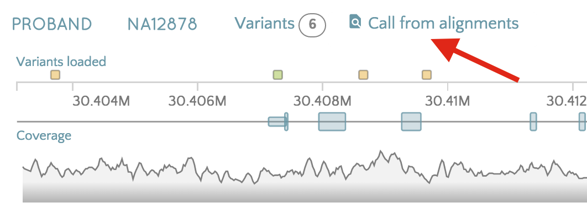
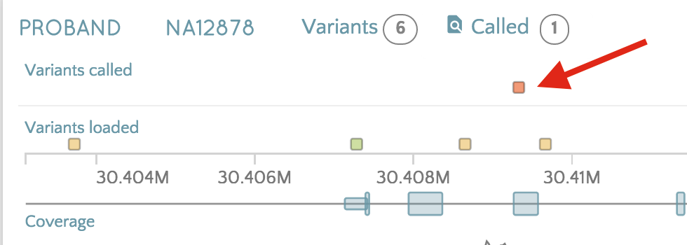
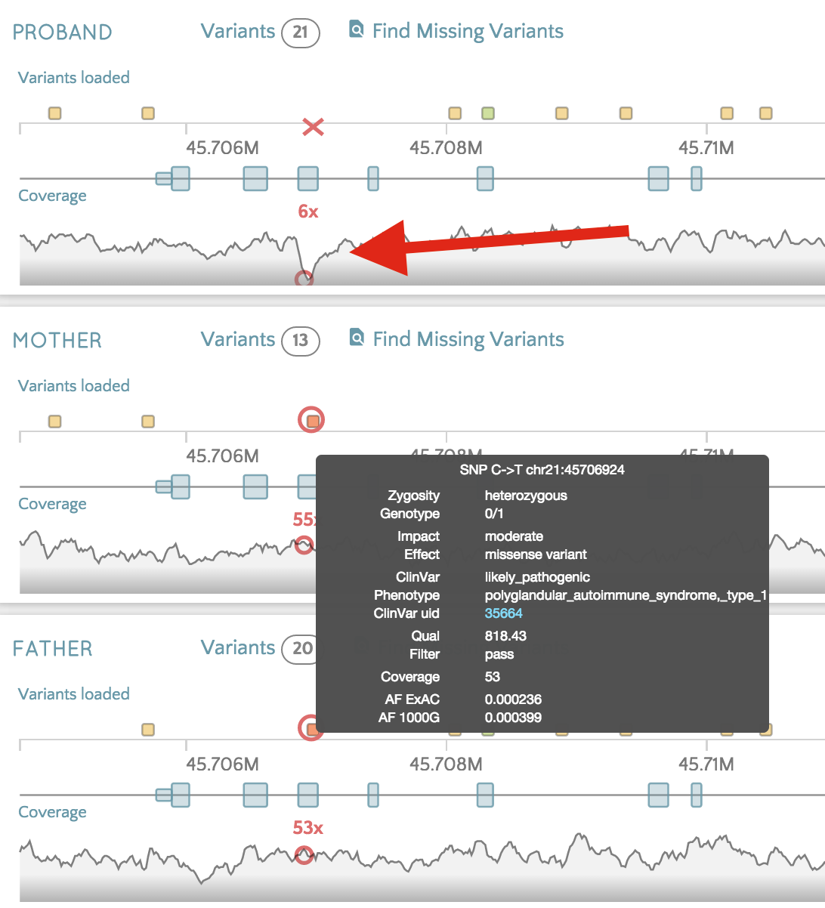
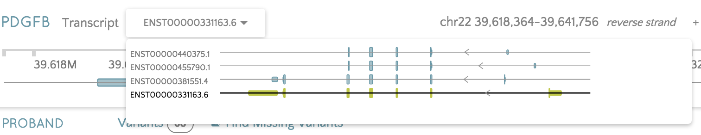

Platinum Trio
Here the platinum trio has been modified to show specific scenarios that can be investigated with gene.iobio. See the genes below to see each scenario.RAI1
Simple view of a recessive variant, pathogenic in clinvar. Looking at the variants, notice that one variant shows in red, analyzed by snpEff and marked as a High Impact variant. Hovering over the variant, notice that the Mother and Father variants are circled. Both Mother and Father variants are heterozygous.
Looking at the variants, notice that one variant shows in red, analyzed by snpEff and marked as a High Impact variant. Hovering over the variant, notice that the Mother and Father variants are circled. Both Mother and Father variants are heterozygous.MYLK2
Here a variant is given a low quality and filtered out due to being called with background samples.  Click 'Call from alignments' and this variant is discovered.
Note that the quality of the call is ~100 in this view since the variant was called in isolation and doesn't suffer from a background of all reference alleles. An argument for a comparison of background/individual calling and getting a good balance for rare/private variants.AIRE
Here low coverage in the Proband is in the same region that both Mother and Father have variants. You can see a het variant present in both parents, but there is a dip in the coverage at this location in the proband. Zoom in on the exon to see the low coverage. The variant is a pathogenic variant and is a het in both parents. This could be a hom alt variant in the proband leading to a recessive disorder, but due to the lack of coverage, we cannot make the call.PDGFB
This is a deletion that is intronic in the canonical transcript. From the transcript drop-down menu, select the third transcript (ENST00000381551.4).

This transcript has an additional exon in which the deletion now falls and is upgraded from a modifier intron variant to a high impact frameshift variant.